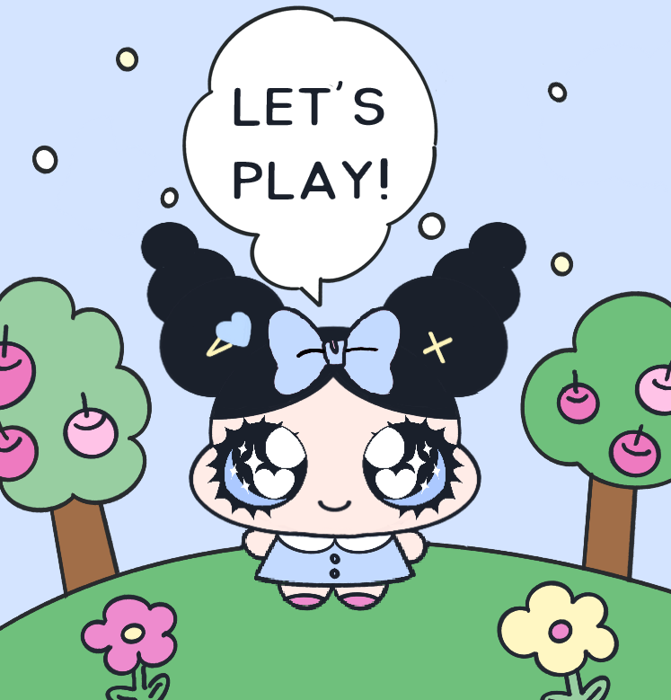
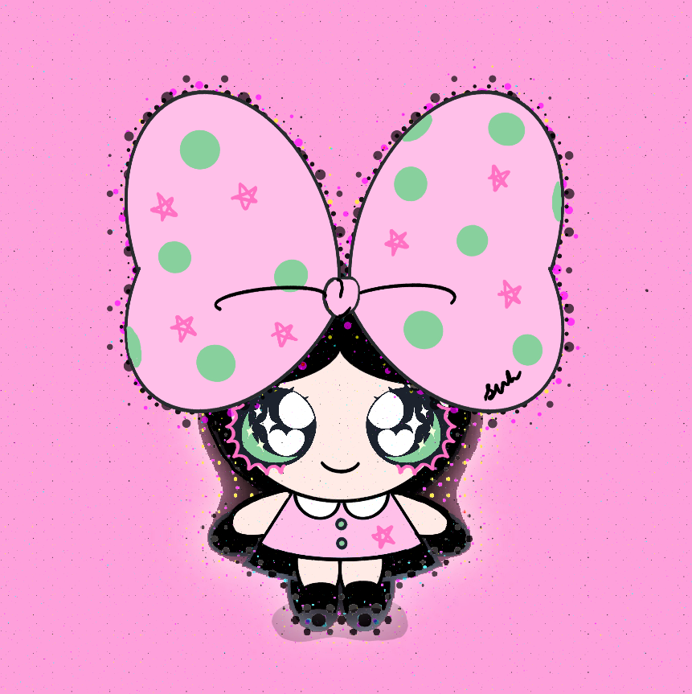
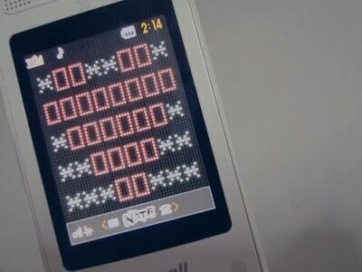
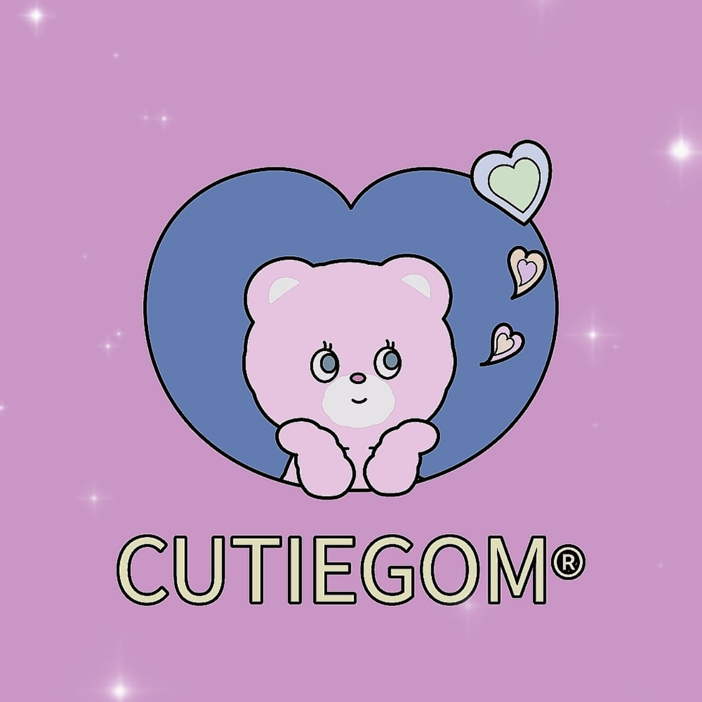
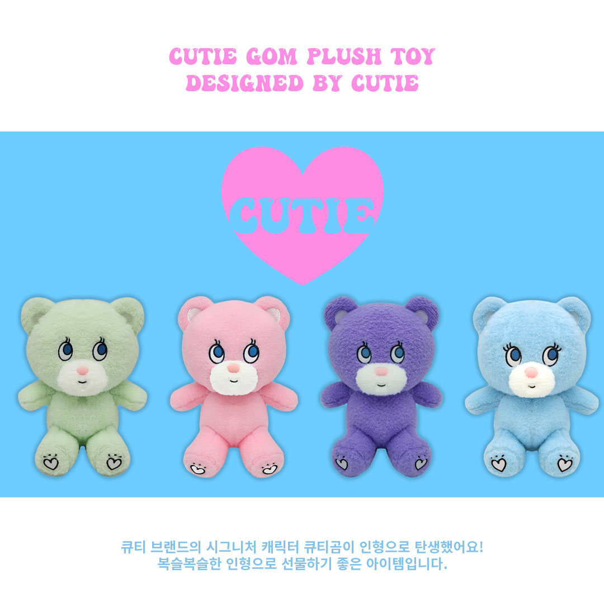

링링! 😄 눈이 크고 예쁜 캐릭터를 예전부터 좋아했기 때문에, 탄생한 아이야. 많이 귀여워해줬으면 해!

왕리본 소녀, 링링이야. 이때만해도 약간 파워퍼프걸 느낌이 나는 것두...!
하지만 더 개성을 찾아가야겠지?? 예쁜 눈에 어울리는 여러 소녀를 만들고 있어!
사실 예쁜 눈을 그리는데까지도 시간이 오래걸렸거든...!

옛날 감성을 좋아해서... 특히 90년대 레트로 분위기를 좋아해서 취향에 맞게 꾸며봤어! 즐거워해줬으면 좋겠어...

큐티곰이라는 캐릭터야. 눈을 치켜뜨고 있는게 매력이지. 충분히 예쁘지만... 더 개성있는 캐릭터를 만들고 싶더라고
그래도 큐티곰은 언젠가 책에 등장시킬 예정이야! 내 첫 캐릭터인 만큼 변화도 많았어. 그만큼 애정이 있나봐!

푹신푹신 인형으로도 나왔어...! 비록 옛날 얘기이긴 하지만 말이야!(그리 옛날도 아님) 그래도 좋아해주는 사람이 있다는게 큰 행운이야...!
오랜 시간동안 연구한 예쁜 눈을 확대하면 이래! 생각보다 정교해. 특히 눈썹부분이.

원래 냐냐뮤란 이름은 이 고양이로부터 시작된거야! 고양이의 울음소리에서 나온 이름이거든. 냐냐+뮤!

정말 초창기 캐릭터로는 개구리 어린이 쿠린이라는 캐릭터도 있어. 볼에 하트가 있는게 특징이야.

이런 그림도 있다!